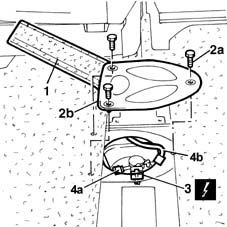
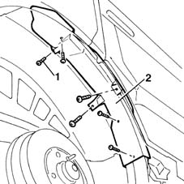
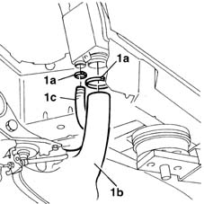
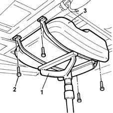

1040A10 fuel tank - r + r and decant fuel
- Path
- Procedures > 10 ENGINE UNIT > 1040 FUEL TANK AND PIPES > 1040A FUEL TANK AND COMPONENTS > 1040A10 fuel tank - r + r and decant fuel
- Kind
- repair procedure (removal / refitting; the operation number is the code)
- Applies to
- engines: 1.9 JTD 8V; all production periods
- Interactive page
- https://sloeber94.github.io/elrnDB-fMltpl/en/#/2891378
Applies to: engines: 1.9 JTD 8V; all production periods
 Removing
Removing
 Refitting
RefittingWith the ignition key in the OFF position, disconnect the battery negative terminal.
 | Name | Connector |
|---|---|---|
- | Battery |
Place the car on a ramp.
Drain the fuel from the tank using suitable equipment and appropriate protection to meet current safety requirements.
7050A90 rear seat (one) - r re - repair with seat removed
7040L14 panel brackets (1) covering seat attachments to passenger compartment floor - r r (Carry out this operation on the central and right rear seats)
1. Lift the pre-cut section of the floor covering to gain access to the fuel pump flap.
2. Unscrew retaining bolts (2a) and remove protective cover (2b).
3. Disconnect the electrical connection from the level gauge.
| Name | Connector |
|---|---|---|
3 | Fuel pump and sender unit |
4. Disconnect the fuel outlet and return lines from quick-release fittings (4a) and (4b).

Applies to: engines: 1.9 JTD 8V; all production periods
Raise the car.
1. Undo the retaining bolts.
2. Remove the plastic fuel filler pipe protection.

Applies to: engines: 1.9 JTD 8V; all production periods
1. Open collars (1a) and disconnect fuel filler pipe (1b) and pipe (1c).

Applies to: engines: 1.9 JTD 8V; all production periods
1. Position a stand beneath the tank to support it during removal.
2. Undo the tank bracket retaining bolts.
3. Lower the hydraulic jack and remove the hydraulic tank.

Applies to: engines: 1.9 JTD 8V; all production periods
Refitting
RemovingPosition the fuel tank on the stand.
Raise the tank into it fits into its seat.
Tighten the bolts securing the tank to the body.
Tighten the tank bolts to torque.
 | Fastening | Component | Ø | Value (daNm) |
|---|---|---|---|---|
- | Bolt | FUEL TANK | M8 | 3.5 |
Remove the tank stand.
Use new colllars to connect the fuel filler pipe.
Fit the plastic filler pipe protection.
Lower the vehicle.
Connect the fuel inlet and outlet pipe quick-release fittings.
Connect the electrical connection to the electric pump and level gauge.
Tighten the fuel pump protective cover retaining bolts.
Refit the floor covering.
7040L14 panel brackets (1) covering seat attachments to passenger compartment floor - r r
7050A95 mount (one) fitting rear seat to floor - r r
- 7050A10 rear seat - r+r perhaps A90
Remove the vehicle from the ramp.
Use the correct equipment and appropriate protection as required by current safety legislation to fill the vehicle with the recommended fuel.
With the ignition key in OFF position, connect the battery negative terminal.
| Name | Connector |
|---|---|---|
- | Battery |
Topics linked from this page (5)
- 7040L14 panel brackets (1) covering seat attachments to passenger compartment floor - r r
- 7050A90 rear seat (one) - r re - repair with seat removed
- 7050A95 mount (one) fitting rear seat to floor - r r
- A1 Battery
- N40 Fuel pump and sender unit